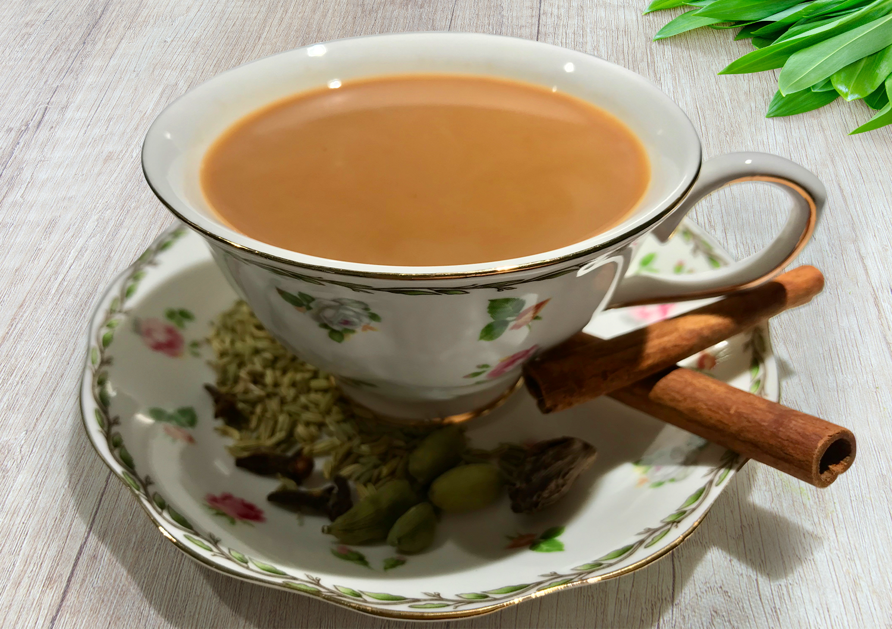

about me
i'm gujarati(indian) but i grew up in cambridge my whole life. i have two younger sisters that love to annoy me. hmmhmhm something interesting?: i drink tea at least twice every day.
i'm interested in coding and art, but i'm a lazy bum who barely practices this stuff and only consumes it... i really like gaming, anime, and reading novels(waw so active). my fav stuff are probably tloz, papers please, free!, blue period, and golden kamuy.
my career aspirations
i don't know the specifics yet, but i know i'd like to get into the cs field in the future. i'd love to be able to work on video games, but i also want financial stability so i'd be cooked if i tried being an indie developer full-time wouldn't i? and i'm worried about how ai will be an obstacle...i hate ai...
my favorite foods
- tea (ik it's a drink)
- rice
- pao bhaji


my hobbies
- gaming
- reading
- drawing